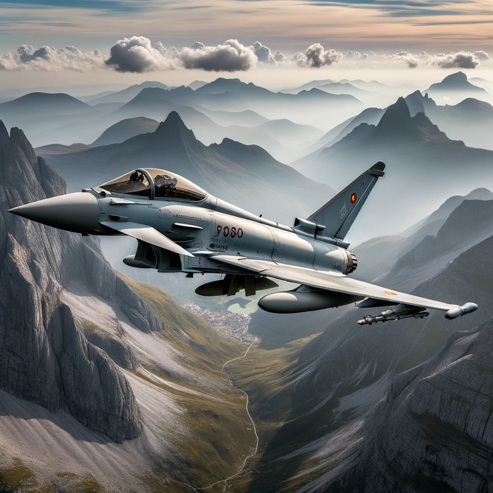

subtitol
L'Eurofighter Typhoon és un avió de combat multirol de quarta
generació-plus desenvolupat i fabricat per un consorci d'empreses
europees format per BAE Systems (Regne Unit), Airbus (anteriorment
EADS) i Leonardo (anteriorment Aeritalia). Va ser concebut per
satisfer les necessitats de les forces aèries de diversos països
europeus. Característiques i punts destacats de l'Eurofighter: Disseny
avançat: L'Eurofighter està dissenyat amb una estructura d'ala delta i
canards, el que li confereix una gran agilitat en l'aire i capacitat
de supermaniobrabilitat. Multirol: Tot i que va ser inicialment
concebut com un avió d'intercepció, l'Eurofighter ha evolucionat per
cobrir una àmplia gamma de missions, incloent atac aire-aire,
aire-a-terra i reconeixement. Aviónica avançada: Està equipat amb una
aviónica d'avantguarda, incloent radar AESA (Active Electronically
Scanned Array), sistemes de guerra electrònica i una àmplia gamma de
sensors. Armament versàtil: L'Eurofighter pot ser equipat amb una
àmplia varietat d'armes, des de míssils aire-aire fins a bombes
guiades làser. Usuari principal: L'Eurofighter està en servei en
diverses forces aèries, incloent el Regne Unit, Alemanya, Itàlia i
Espanya, entre d'altres. Desenvolupament: La iniciativa per
desenvolupar l'Eurofighter va començar als anys 80, amb l'objectiu de
proporcionar a Europa un avió de combat d'alt rendiment i modern. El
primer vol va tenir lloc l'any 1994. Exportacions: A més dels països
membres originals del projecte, l'Eurofighter ha estat exportat i
seleccionat per diverses altres nacions, incloent Àustria, Aràbia
Saudita, Oman i Kuwait. Actualitzacions constants: L'Eurofighter
continua rebent actualitzacions i millores per mantenir-lo a la
vanguarda de la tecnologia i assegurar que segueixi sent competitiu en
el panorama mundial d'avions de combat. L'Eurofighter Typhoon és un
dels avions de combat més avançats del món i representa el compromís
de col·laboració i desenvolupament conjunt entre els països europeus
en l'àmbit de la defensa aèria.